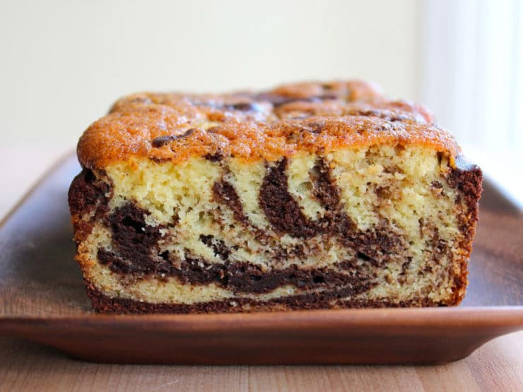

Chocolate Marble Cake

Description:
The Chocolate Marble Carke is a classic childhood cooking memoery. Whether using
lurid colors for a physchedelic finish, or just chocolate and canilla, its a teatime treat.
Ingredients
- 225g butter, softend
- 225g caster sugar
- 4 eggs
- 225g sef raising flour
- 3 lbsp milk
- 1 tsp vanilla extract
- 2 tbsp cocoa poweder
Instructions
-
Heat oven to 180C/fan 160C/gas 4. Grease a 20cm cake tin and line the
bottom with a circle of greaseproof paper.
-
If you want to make life easy, simply put 225g butter, 225g caster sugar,
4 eggs, 225g self-raising flour, 3 tbsp milk and 1 tsp vanilla extract into
a food processor and whizz for 1-2 mins until smooth.
-
If you prefer to mix by hand, beat 225g butter and 225g caster sugar together,
then add 4 eggs, one at a time, mixing well after each addition
-
Fold through 225g self-raising flour, 3 tbsp milk and 1 tsp vanilla extract until the mixture is smooth.
-
Divide the mixture between 2 bowls. Stir 2 tbsp cocoa powder into the mixture in
one of the bowls. Take 2 spoons and use them to dollop the chocolate and vanilla cake mixes into the tin alternately.
-
When all the mixture has been used up (and if young kids are doing this, you’ll need
to ensure the base of the tin is fairly evenly covered), tap the bottom on your
work surface to ensure that there aren’t any air bubbles.
-
Take a skewer and swirl it around the mixture in the tin a few times to create a marbled effect.
-
Bake the cake for 45-55 mins until a skewer inserted into the centre comes out clean.
Turn out onto a cooling rack and leave to cool. Will keep for 3 days in an airtight container or freeze for up to 3 months.